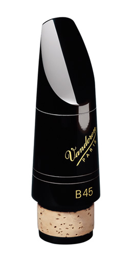
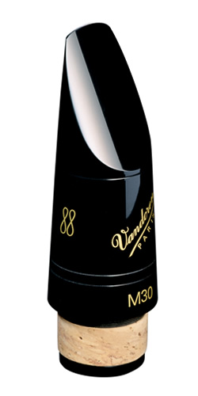
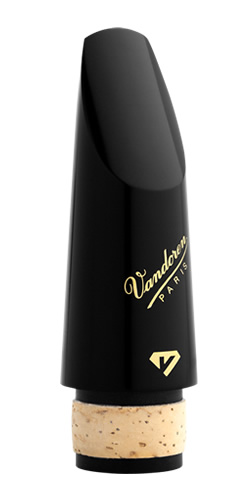

バンドーレン・クラリネット用マウスピース
バンドーレン・マウスピース
Traditional BeakとProfile 88
 
プロファイル88とトラディショナルの違いは、ビークの角度にあります。
それによって演奏家は、最適な姿勢、音の伸び、演奏の快適さ、正確なアーティキュレーションを得るにはどちらが自分に合っているのかを選ぶことができます。
13Series アメリカン・ピッチ／Profile88
バンドーレン社はA=440ピッチを採用しているアメリカのクラリネット奏者のために「13シリーズ」を開発しました。
まず最初に、このシリーズのために特別なフェーシングをもつ4種のモデル、M13、M13ライヤー、M15そしてM30が開発されました。
そして（トラディショナル・フェーシングの）他のモデルにもこの「13シリーズ」は拡大され、5RV、5RVライヤー、B45、B40そしてB40ライヤーの13シリーズもできました。
| Traditional Beak | Profile 88 | 13Series Profile 88 | TIP OPENING 1/100 MM | FACING LENGTH | RECOMMENDED REED STRENGTHS | COMMENTS | |||||
|---|---|---|---|---|---|---|---|---|---|---|---|
B♭ |
M13 | CM4138 | 100,5 | L | 3 1/2 → 4 | 3 1/2+ → 4 1/2 | 3,5+ → 5 | 3,5 → 4,5 | 豊かで、カラフルなサウンドです。反応が非常に正確で、あらゆる要求に応えてくれます。 | ||
| M13 Lyre | CM4158 | 102- | ML | 3 1/2 → 4 | 3 1/2+ → 4 1/2 | 3,5+ → 5 | 3,5 → 4,5 | M13と同様のクオリティですが、ティップ・オープニングが大きめで、高音域はより吹きやすいです。このフェイシングがとりわけピュアな音をもたらしてくれます。 | |||
| M15 | CM317 | CM3178 | CM4178 | 103,5 | L | 3 1/2 → 5 | 3 1/2+ → 5 | 4 → 5 | 3,5 → 4,5 | アーティキュレーションがとても容易です。多彩な音色をもたらしてくれます。 | |
| 5RV | CM301 | CM3018 | CM4018 | 106,5 | MS | 3 → 4 | 3 1/2 → 4 | 3,5 → 4 | 3,5 → 4 | 歴史が証明するプロ用のマウスピースです。品質と伝統を誇ります。 | |
| 5RV Lyre | CM302 | CM3028 | CM4028 | 109+ | M | 3 → 4 | 3 1/2 → 4 | 3,5 → 4 | 3,5 → 4 | 5RVよりティップ・オープニングが大きめで、フェイシングも長くなっています。 | |
| M30 Lyre | CM3001 | CM30018 | CM40018 | 113,5 | L | 3 → 4 | 3 1/2 → 4 | 3,5 → 4 | 3,5 → 4 | 5RVライヤーよりもティップオープニングが広く、またフェーシングが長いので、より柔軟でまろやかな音を生み出します。 このマウスピースは比類のないサウンドです。 | |
| M30 | CM318 | CM3188 | CM4188 | 115 | L | 3 → 4 | 3 1/2 → 4 | 3,5 → 4 | 3,5 → 4 | このフェイシングの長さによって非常にフレキシビリティが増し、音の芯とまろやかさのバランスがよくなりました。 | |
| B40 Lyre | CM319 | CM3198 | CM4198 | 117,5 | L | 2 → 3 | 2 1/2 → 3 | 2,5 → 3,5 | 3 → 3,5+ | まろやかさと豊かな色彩感が完璧に融合されています。特に高音は吹きやすくなっています。 | |
| B45・ | CM309 | CM3098 | 119,5 | ML | 2 1/2 → 3 1/2 | 3 → 3 1/2+ | 3 → 3,5 | 3 → 3,5+ | B45と同様の性格をもっており、とても息が入りやすいです。 | ||
| B45 | CM308 | CM3088 | CM4088 | 119,5 | ML | 2 1/2 → 3 1/2 | 3 → 3 1/2+ | 3 → 3,5 | 3 → 3,5+ | 世界標準とも言うべきマウスピースです。中庸のティップ・オープニングとフェイシングで、非常に多くのクラリネット奏者に愛用されています。 | |
| B40 | CM307 | CM3078 | CM4078 | 119,5 | ML | 2 → 3 | 2 1/2 → 3 1/2 | 2,5 → 3,5 | 2,5 → 3,5 | B45と同じフェイシングで、ティップレールの幅は広くなっています。コンパクトで芯のある音です。 | |
| B45 Lyre | CM312 | CM3128 | 127 | ML | 2 → 3 | 2 1/2 → 3 1/2 | 2,5 → 3,5 | 2,5 → 3,5 | ティップ・オープニングがとても大きいのが特徴で、フレキシブルでまるい音が得られます。そしてとても息が入りやすいです。 | ||
| 5JB | CM310 | CM3108 | 147 | L | 1 1/2 → 2 | 2 1/2 | 2,5 | 2,5 | ジャズ用のマウスピースです。 | ||
| 7JB | CM3007 | CM30078 | 170 | L | 1 → 2 | ジャズや伝統音楽用のマウスピースで、パワフルで柔軟性のあるサウンドです。 | |||||
E♭ |
5RV | CM321 | 106,5 | S | 3 → 4 | 3 → 4 | 3 → 4 | 吹きやすく、音色が豊かです。 | |||
| B44 | CM322 | 110,5 | M | 2 1/2 → 4 | 2 1/2 → 4 | 2,5 → 4 | 歴史が証明するスタンダードです。 | ||||
| B40 | CM323 | 110,5 | M | 2 → 3 | 2 1/2 → 3 | 2,5 → 3 | B44と同様の設計ですが、ティップレールの幅が広いためにコンパクトで中心のはっきりとした音がします。 | ||||
| M30 | CM325 | 117 | ML | 2 1/2 → 3 1/2 | 2 1/2 → 3 1/2 | 2,5 → 3,5 | 多くの演奏家に認められている、まさにベストセラーのマウスピースです。 | ||||
Alto |
5RV | CM331 | 126 | M | 3 → 4 | 音色が非常に豊かです。 | |||||
| B44 | CM332 | 138 | ML | 2 1/2 → 3 1/2 | ティップレールが細いので息が入りやすいです。 | ||||||
| B40 | CM333 | 138 | ML | 2 → 3 | B44と同様の設計ですが、ティップレールの幅が広いためにコンパクトで中心のはっきりとした音がします。 | ||||||
Bass |
B44 | CM342 | 184 | M | 3 → 4 | 3 → 4 | 3 → 4 | 多くの演奏家に認められている、まさにベストのマウスピースです。 | |||
| B45 | CM344 | 193 | ML | 2 1/2 → 3 1/2 | 2 1/2 → 3 1/2 | 2,5 → 3,5 | B44と音質は同様ですが、ティップ・オープニングは広めです。反応のよさは抜群です。 | ||||
| B40 | CM343 | 193 | ML | 2 → 3 | 2 1/2 → 3 | 2,5 → 3 | B45と同様の設計ですが、ティップレールの幅が広いためにコンパクトで芯のある音がします。 | ||||
| B46 | CM345 | 205 | L | 2 → 3 | 2 1/2 → 3 | 2,5 → 3 | サウンドがパワフルで、ジャズ奏者に好まれています。 | ||||
| B50 | CM346 | 215 | L | 2 1/2 → 3 1/2 | 2 1/2 → 3 | 2,5 → 3 | コンパクトな、そして豊かで深いサウンドです。 | ||||
A♭クラリネットおよびコントラバス・クラリネット用のマウスピースは受注生産となっております。
| Mouthpiece only | Mouthpiece with ligature and cap | |
|---|---|---|
| A♭ | CM360K | |
| Contrabass | CM370 |
ブラックダイヤモンドエボナイト

ブラックダイヤモンドエボナイトマウスピースは、内外部に新しいデザインを施し、特に高音域において、色彩豊かで深みのある演奏が可能になりました。
| Black Diamond Ebonite | Black Diamond Ebonite 13Series |
TIP OPENING 1/100 MM | FACING LENGTH | RECOMMENDED REED STRENGTHS | COMMENTS | |||||
|---|---|---|---|---|---|---|---|---|---|---|
E♭ |
BD5 | CM125 | 114 | ML |
2 1/2 → 3 1/2 |
2 1/2 → 3 1/2 |
2,5 → 3,5 | 丸みのある豊かなサウンドが特長で、高音域も非常に楽に演奏できます。 E♭クラリネットマウスピースの新たなスタンダードの誕生です。 | ||
B♭ |
BD5 | CM1005 | CM1405 | 113 | M | 3 → 3 1/2 | 3 → 3 1/2+ | 3 → 3,5+ | 3 → 3,5+ | ダークで豊か、かつコンパクトな、完璧にバランスのとれたサウンドです。 |
| BD4 | CM1004 | CM1404 | 115,5 | ML | 3 → 3 1/2 | 3 → 3 1/2+ | 3 → 3,5+ | 3 → 3,5+ | BD5と同じような音質でありながら、息が入りやすく、発音（アーティキュレーション）のしやすさが特徴。 | |
| BD7 | CM1007 | CM1407 | 133 | L | 2 1/2 → 3 | 3 → 3 1/2 | 3 → 3,5 | 3 → 3,5 | BD5のような丸みのあるまとまったサウンドも保ちつつ、広めのオープニングと豊かな音量が特徴。 | |
Alto |
BD5 | CM135 | 140 | L |
2 1/2 → 3 1/2 |
反応の良さと、ふくよかで色彩豊かな音色。 BD5シリーズの特徴を兼ね備えた、アルトクラリネットとバセットホルン用のマウスピースです。 このマウスピースはアルトクラリネットのリードだけではなく、アルトサックスのV21のリードでも使用できます。 | ||||
Bass |
BD5 | CM145 | 187 | ML |
2 1/2 → 3 1/2 |
2 1/2 → 3 1/2 |
2,5 → 3,5 | このBD5バスクラリネット用マウスピースはB♭クラリネットと同じような吹奏感で、バスクラリネットを演奏できます。 非常に反応がよく、少ない息でもとても丸く、豊かな音をもたらしてくれます。 | ||
バンドーレン・ジャーマンクラリネット用マウスピース モデルリスト
| CODE | TIP OPENING 1/100 MM | FACING LENGTH | RECOMMENDED REED STRENGTHS | COMMENTS | |||||
|---|---|---|---|---|---|---|---|---|---|
Mouthpieces designed for German system clarinet while using French cut reeds |
BD5D | CM1805 | 113 | M | 2 1/2 → 3 1/2 | ダークで豊か、かつコンパクトなサウンドです。 | |||
| M30D | CM36188 | 115 | L | 2 1/2 → 3 1/2 | 音色の美しさとまろやかさのバランスが抜群です。 | ||||
| B40D | CM36078 | 119,5 | ML | 2 1/2 → 3 | まとまった、芯のあるサウンドです。 | ||||
| CODE | TIP OPENING 1/100 MM | FACING LENGTH | RECOMMENDED REED STRENGTHS | COMMENTS | ||||
|---|---|---|---|---|---|---|---|---|
German clarinet mouthpieces designed for use with German reeds |
D15 | CM3815 | 87,5 | L | 2 1/2 → 3 1/2 | コンパクトなサウンドで、初心者からプロフェッショナルまで全ての奏者の要求に応えます。 | ||
| D20 | CM3820 | 96 | ML | 2 → 3 1/2 | 柔軟かつ統一感のあるサウンドで、そのバランスは完璧です｡ | |||
| D25 | CM3825 | 104 | L | 2 → 3 | 豊かで芯のある音色で、多彩なサウンドを生み出します｡ 幅広いダイナミクスレンジに対応し、音程が乱れることはありません｡ ジャーマンシステム用マウスピースの新たなスタンダードです｡ | |||
| CODE | TIP OPENING 1/100 MM | FACING LENGTH | RECOMMENDED REED STRENGTHS | COMMENTS | ||
|---|---|---|---|---|---|---|
Austrian clarinet mouthpieces designed for use with Austrian reeds |
W270 | CM393 | 72 | VL | 4 → 6+ | 硬めのリードとの組み合わせにより、ダークなサウンドと素早いレスポンスを実現します。 |